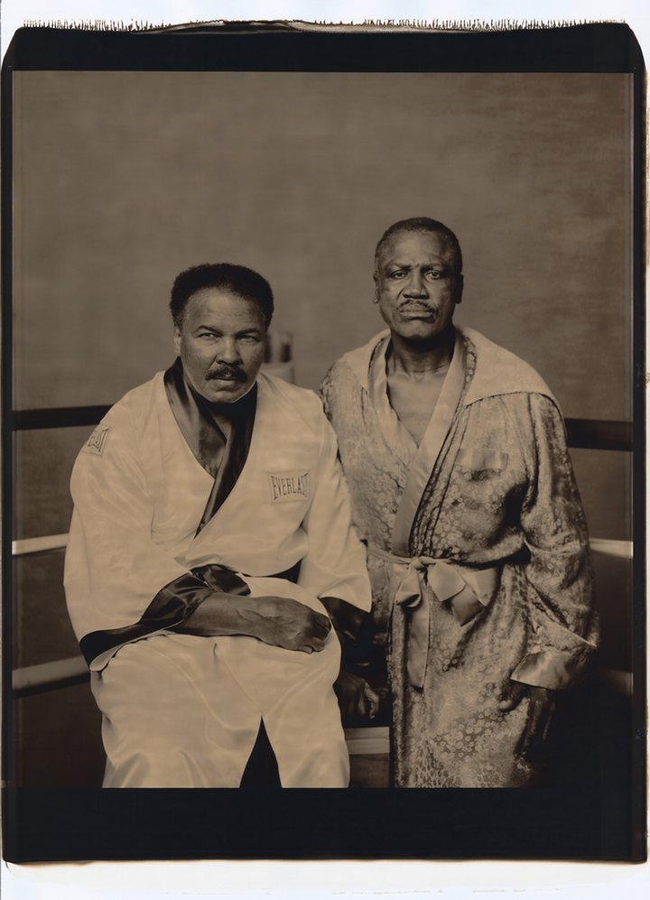
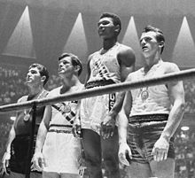

Ali's Pictures
In 2003 this was voted the greatest sport photo ever by the Observer. Even Neil Leifer calls it his best shot – one, he says, on which he cannot improve. He’s right. The pristine white canvas is the perfect backdrop, accentuating the two fighters whose figures are so neatly counterposed. I can’t imagine boxing will ever look this sublime again. Photograph: Neil Leifer/Sports Illustrated/Getty Images
This emotive picture was snapped when Clay beat Liston, who was unable to answer the bell for round seven of their 1964 fight. There are many fine photos of this moment taken head on but in this one I like Clay’s explosive pose and the way his cartwheeling limbs extend towards the corners of the frame. It’s as if he’s about to leap out of it. Photograph: Photoshot/Getty Images Facebook Twitter Pinterest
This shot witnesses a pre-fight scene where Ali is poised with anticipation. His outline is so distinctive – it reminds me of the famed image of Ali underwater by Flip Schulke. Notice, also, the shadowy figure in the toilet behind Ali; at first I questioned whether he spoiled Ali’s solitude, but I grew to like the subtle detail of their twinning. Photograph: James Drake/The LIFE Picture Collection/Gett
I find this image of Ali and Frazier, taken in 2003, to be profoundly melancholic . These two men, who were once so supreme and who shared such a glorious history, appear to have been defeated by age – Frazier especially. It’s an uncomfortably earnest portrait. Photograph: Walter Iooss Jr./SPORTS ILLUSTRA/Sports Illustrated
Ali was 34 by the time this photograph was taken of him and Ken Norton playfully chasing one another across the field at Yankee Stadium. You don’t get fight promotions like this these days. Also, as my colleague pointed out, look at their shoes – what on earth are they wearing those Cuban heels for?!
The most famous photo of Ali ever taken is of him standing over Sonny Liston, who appeared to have thrown their 1965 bout. It was taken by Neil Leifer and was shot in colour. Spare a thought then for John Rooney, sat right beside Leifer, who captured this less-acclaimed version. Growing up, I remember buying this one and loving it all the same.
Muhammad Ali
 Muhammad Ali /ɑːˈliː/[9] (born Cassius Marcellus Clay, Jr.; January 17, 1942 – June 3, 2016) was an American Olympic and professional boxer and activist. He is widely regarded as one of the most significant and celebrated sports figures of the 20th century. From early in his career, Ali was known as an inspiring, controversial and polarizing figure both inside and outside the ring.[10][11]
Cassius Clay was born and raised in Louisville, Kentucky, and began training as an amateur boxer when he was 12 years old. At 18, he won a gold medal in the light heavyweight division at the 1960 Summer Olympics in Rome, and converted to Islam shortly afterwards. At 22, he won the WBA and WBC heavyweight titles from Sonny Liston in an upset in 1964. Clay then changed his legal name from Cassius Clay, which he called his "slave name", to Muhammad Ali, and gave a message of racial pride for African Americans and resistance to white domination during the 1960s Civil Rights Movement.[12][13]
In 1966, two years after winning the heavyweight title, Ali further antagonized the white establishment in the U.S. by refusing to be conscripted into the U.S. military, citing his religious beliefs and opposition to American involvement in the Vietnam War.[12][14] He was eventually arrested, found guilty of draft evasion charges and stripped of his boxing titles. He successfully appealed in the U.S. Supreme Court, which overturned his conviction in 1971, by which time he had not fought for nearly four years—losing a period of peak performance as an athlete. Ali's actions as a conscientious objector to the war made him an icon for the larger counterculture generation.[15][16]
Ali is regarded as one of the greatest boxers of all time. He remains the only three-time lineal heavyweight champion; he won the title in 1964, 1974, and 1978. Between February 25, 1964, and September 19, 1964, Ali reigned as the undisputed heavyweight champion. He is the only boxer to be named The Ring magazine Fighter of the Year five times. He was named Sportsman of the Century by Sports Illustrated and the Sports Personality of the Century by the BBC. Nicknamed "The Greatest", he was involved in several historic boxing matches.[17] Notable among these were the first Liston fight; the "Fight of the Century", "Super Fight II" and the "Thrilla in Manila" versus his rival Joe Frazier; and "The Rumble in the Jungle" versus George Foreman.
At a time when most fighters let their managers do the talking, Ali thrived in—and indeed craved—the spotlight, where he was often provocative and outlandish.[18][19][20] He was known for trash talking, and often freestyled with rhyme schemes and spoken word poetry, both for his trash talking in boxing and as political poetry for his activism, anticipating elements of rap and hip hop music.[21][22][23] As a musician, Ali recorded two spoken word albums and a rhythm and blues song, and received two Grammy Award nominations.[23] As an actor, he performed in several films and a Broadway musical. Ali wrote two autobiographies, one during and one after his boxing career.
As a Muslim, Ali was initially affiliated with Elijah Muhammad's Nation of Islam (NOI) and advocated their black separatist ideology. He later disavowed the NOI, adhering to Sunni Islam and supporting racial integration, like his former mentor Malcolm X. After retiring from boxing in 1981, Ali devoted his life to religious and charitable work. In 1984, Ali was diagnosed with Parkinson's syndrome, which his doctors attributed to boxing-related brain injuries. As the condition worsened, Ali made limited public appearances and was cared for by his family until his 2016 death in Scottsdale, Arizona..
Muhammad Ali /ɑːˈliː/[9] (born Cassius Marcellus Clay, Jr.; January 17, 1942 – June 3, 2016) was an American Olympic and professional boxer and activist. He is widely regarded as one of the most significant and celebrated sports figures of the 20th century. From early in his career, Ali was known as an inspiring, controversial and polarizing figure both inside and outside the ring.[10][11]
Cassius Clay was born and raised in Louisville, Kentucky, and began training as an amateur boxer when he was 12 years old. At 18, he won a gold medal in the light heavyweight division at the 1960 Summer Olympics in Rome, and converted to Islam shortly afterwards. At 22, he won the WBA and WBC heavyweight titles from Sonny Liston in an upset in 1964. Clay then changed his legal name from Cassius Clay, which he called his "slave name", to Muhammad Ali, and gave a message of racial pride for African Americans and resistance to white domination during the 1960s Civil Rights Movement.[12][13]
In 1966, two years after winning the heavyweight title, Ali further antagonized the white establishment in the U.S. by refusing to be conscripted into the U.S. military, citing his religious beliefs and opposition to American involvement in the Vietnam War.[12][14] He was eventually arrested, found guilty of draft evasion charges and stripped of his boxing titles. He successfully appealed in the U.S. Supreme Court, which overturned his conviction in 1971, by which time he had not fought for nearly four years—losing a period of peak performance as an athlete. Ali's actions as a conscientious objector to the war made him an icon for the larger counterculture generation.[15][16]
Ali is regarded as one of the greatest boxers of all time. He remains the only three-time lineal heavyweight champion; he won the title in 1964, 1974, and 1978. Between February 25, 1964, and September 19, 1964, Ali reigned as the undisputed heavyweight champion. He is the only boxer to be named The Ring magazine Fighter of the Year five times. He was named Sportsman of the Century by Sports Illustrated and the Sports Personality of the Century by the BBC. Nicknamed "The Greatest", he was involved in several historic boxing matches.[17] Notable among these were the first Liston fight; the "Fight of the Century", "Super Fight II" and the "Thrilla in Manila" versus his rival Joe Frazier; and "The Rumble in the Jungle" versus George Foreman.
At a time when most fighters let their managers do the talking, Ali thrived in—and indeed craved—the spotlight, where he was often provocative and outlandish.[18][19][20] He was known for trash talking, and often freestyled with rhyme schemes and spoken word poetry, both for his trash talking in boxing and as political poetry for his activism, anticipating elements of rap and hip hop music.[21][22][23] As a musician, Ali recorded two spoken word albums and a rhythm and blues song, and received two Grammy Award nominations.[23] As an actor, he performed in several films and a Broadway musical. Ali wrote two autobiographies, one during and one after his boxing career.
As a Muslim, Ali was initially affiliated with Elijah Muhammad's Nation of Islam (NOI) and advocated their black separatist ideology. He later disavowed the NOI, adhering to Sunni Islam and supporting racial integration, like his former mentor Malcolm X. After retiring from boxing in 1981, Ali devoted his life to religious and charitable work. In 1984, Ali was diagnosed with Parkinson's syndrome, which his doctors attributed to boxing-related brain injuries. As the condition worsened, Ali made limited public appearances and was cared for by his family until his 2016 death in Scottsdale, Arizona..
Early life and amateur career
Cassius Marcellus Clay, Jr. /ˈkæʃəs/ was born on January 17, 1942, in Louisville, Kentucky.[24] He had a sister and four brothers.[25][26] He was named for his father, Cassius Marcellus Clay Sr., who himself was named in honor of the 19th-century Republican politician and staunch abolitionist, Cassius Marcellus Clay, also from the state of Kentucky. Clay's father's paternal grandparents were John Clay and Sallie Anne Clay; Clay's sister Eva claimed that Sallie was a native of Madagascar.[27] He was a descendant of slaves of the antebellum South, and was predominantly of African descent, with Irish[28] and English heritage.[29][30][31] His father painted billboards and signs,[24] and his mother, Odessa O'Grady Clay, was a domestic helper. Although Cassius Sr. was a Methodist, he allowed Odessa to bring up both Cassius Jr. and his younger brother Rudolph "Rudy" Clay (later renamed Rahman Ali) as Baptists.[32] Cassius Jr. attended Central High School in Louisville.[2] Clay grew up in racial segregation. His mother recalled one occasion where he was denied a drink of water at a store."They wouldn't give him one because of his color. That really affected him."[12] He was also affected by the 1955 murder of Emmett Till, which led to young Clay and a friend taking out their frustration by vandalizing a local railyard.[33][34] Ali at the 1960 Olympics Clay was first directed toward boxing by Louisville police officer and boxing coach Joe E. Martin,[35] who encountered the 12-year-old fuming over a thief taking his bicycle. He told the officer he was going to "whup" the thief. The officer told him he had better learn how to box first.[36] For the last four years of Clay's amateur career he was trained by boxing cutman Chuck Bodak.[37] Clay made his amateur boxing debut in 1954.[38] He won six Kentucky Golden Gloves titles, two national Golden Gloves titles, an Amateur Athletic Union national title, and the Light Heavyweight gold medal in the 1960 Summer Olympics in Rome.[39] Clay's amateur record was 100 wins with five losses. Ali claimed in his 1975 autobiography that shortly after his return from the Rome Olympics he threw his gold medal into the Ohio River after he and a friend were refused service at a "whites-only" restaurant and fought with a white gang. The story has since been disputed and several of Ali's friends, including Bundini Brown and photographer Howard Bingham, have denied it. Brown told Sports Illustrated writer Mark Kram, "Honkies sure bought into that one!" Thomas Hauser's biography of Ali stated that Ali was refused service at the diner but that he lost his medal a year after he won it.[40] Ali received a replacement medal at a basketball intermission during the 1996 Olympics in Atlanta, where he lit the torch to start the games.
Early career
Clay made his professional debut on October 29, 1960, winning a six-round decision over Tunney Hunsaker. From then until the end of 1963, Clay amassed a record of 19–0 with 15 wins by knockout. He defeated boxers including Tony Esperti, Jim Robinson, Donnie Fleeman, Alonzo Johnson, George Logan, Willi Besmanoff, Lamar Clark, Doug Jones and Henry Cooper. Clay also beat his former trainer and veteran boxer Archie Moore in a 1962 match.[41][42] These early fights were not without trials. Clay was knocked down both by Sonny Banks and Cooper. In the Cooper fight, Clay was floored by a left hook at the end of round four and was saved by the bell. The fight with Doug Jones on March 13, 1963, was Clay's toughest fight during this stretch. The number-two and -three heavyweight contenders respectively, Clay and Jones fought on Jones' home turf at New York's Madison Square Garden. Jones staggered Clay in the first round, and the unanimous decision for Clay was greeted by boos and a rain of debris thrown into the ring (watching on closed-circuit TV, heavyweight champ Sonny Liston quipped that if he fought Clay he might get locked up for murder). The fight was later named "Fight of the Year" by Ring Magazine.[43] In each of these fights, Clay vocally belittled his opponents and vaunted his abilities. He called Jones "an ugly little man" and Cooper a "bum". He was embarrassed to get in the ring with Alex Miteff. Madison Square Garden was "too small for me".[44] Clay's behavior provoked the ire of many boxing fans.[45] His provocative and outlandish behavior in the ring was inspired by professional wrestler "Gorgeous George" Wagner.[46] After Clay left Moore's camp in 1960, partially due to Clay's refusing to do chores such as dish-washing and sweeping, he hired Angelo Dundee, whom he had met in February 1957 during Ali's amateur career,[47] to be his trainer. Around this time, Clay sought longtime idol Sugar Ray Robinson to be his manager, but was rebuffed.
 The version of this photograph which made the cover of Sports Illustrated was shot by Richard Meek. But I prefer this picture taken shortly beforehand by Ali’s friend Howard Bingham. It’s just a little more fun. And I like how the security guard is there in the background keeping tabs.
The version of this photograph which made the cover of Sports Illustrated was shot by Richard Meek. But I prefer this picture taken shortly beforehand by Ali’s friend Howard Bingham. It’s just a little more fun. And I like how the security guard is there in the background keeping tabs.